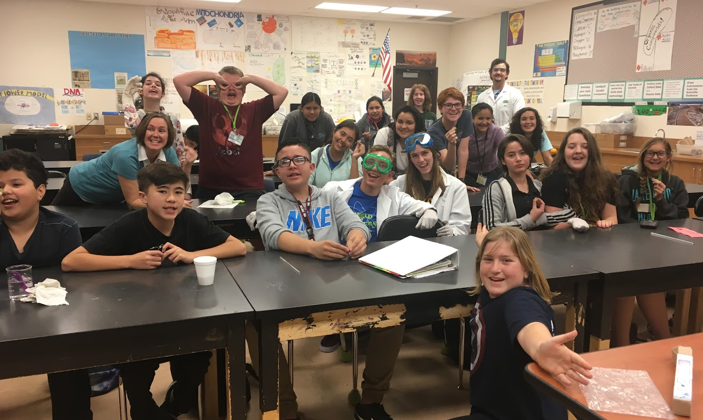

WOW Science
I love educating people about science. I started
working with the World of Wonders Science Museum towards the end of high school.
This included a collaboration with my friend Darby McCauley to write and present two lessons
to middle school students.
After my first year of college I went back to the museum and started a part time job at
the WOW. Now I help the museum by writing lesson plans, helping teach in the outreach
program known as WOW on Wheels, and teach and organize summer camps. I also got to create and
teach the Lunar School for the Apollo 50th Anniversary. I am certified to run Lodi
Unified School District’s very own StarLab planetarium dome. Inspiring kids to learn more about science is
one of my favorite ways to make a difference in the world. Please check out the
WOW SCIENCE MUSEUM and consider visiting. In my time
at the WOW I have written several unique and engaging lesson plans for students: Art of Alchemy, Narrowing on Newton, Solar System and Beyond II,
What is Gravity, Lunar School, and more.
Below is a fun picture with the kids from the Art of Alchemy lesson I co-wrote with my friend Darby.
